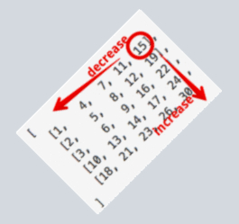

240. Search a 2D Matrix II
从右上角开始搜索，小则下移，大则左移，这个方案真是精妙！

Write an efficient algorithm that searches for a value in an m x n matrix. This matrix has the following properties:
-
Integers in each row are sorted in ascending from left to right.
-
Integers in each column are sorted in ascending from top to bottom.
Example:
Consider the following matrix:
[ [1, 4, 7, 11, 15], [2, 5, 8, 12, 19], [3, 6, 9, 16, 22], [10, 13, 14, 17, 24], [18, 21, 23, 26, 30] ]
Given target = 5, return true.
Given target = 20, return false.
package com.diguage.algorithm.leetcode;
import java.util.Objects;
/**
* = 240. Search a 2D Matrix II
*
* https://leetcode.com/problems/search-a-2d-matrix-ii/[(1) Search a 2D Matrix II - LeetCode]
*
* Write an efficient algorithm that searches for a value in an m x n matrix. This matrix has the following properties:
*
* * Integers in each row are sorted in ascending from left to right.
* * Integers in each column are sorted in ascending from top to bottom.
*
* *Example:*
*
* Consider the following matrix:
*
* ----
* [
* [1, 4, 7, 11, 15],
* [2, 5, 8, 12, 19],
* [3, 6, 9, 16, 22],
* [10, 13, 14, 17, 24],
* [18, 21, 23, 26, 30]
* ]
* ----
*
* Given target = `5`, return `true`.
*
* Given target = `20`, return `false`.
*
* @author D瓜哥, https://www.diguage.com/
* @since 2020-01-23 10:04
*/
public class _0240_SearchA2DMatrixII {
/**
* Runtime: 5 ms, faster than 99.96% of Java online submissions for Search a 2D Matrix II.
*
* Memory Usage: 50.3 MB, less than 5.66% of Java online submissions for Search a 2D Matrix II.
*
* Copy from: https://leetcode.com/problems/search-a-2d-matrix-ii/discuss/66140/My-concise-O(m%2Bn)-Java-solution[(1) My concise O(m+n) Java solution - LeetCode Discuss]
*/
public boolean searchMatrix(int[][] matrix, int target) {
if (Objects.isNull(matrix) || matrix.length == 0) {
return false;
}
int column = 0;
int row = matrix[0].length - 1;
while (column < matrix.length && 0 <= row) {
int value = matrix[column][row];
if (value == target) {
return true;
} else if (value < target) {
column++;
} else if (value > target) {
row--;
}
}
return false;
}
public static void main(String[] args) {
_0240_SearchA2DMatrixII solution = new _0240_SearchA2DMatrixII();
int[][] m1 = {
{1, 4, 7, 11, 15},
{2, 5, 8, 12, 19},
{3, 6, 9, 16, 22},
{10, 13, 14, 17, 24},
{18, 21, 23, 26, 30}
};
boolean r1 = solution.searchMatrix(m1, 5);
System.out.println(r1);
boolean r2 = solution.searchMatrix(m1, 20);
System.out.println(!r2);
}
}